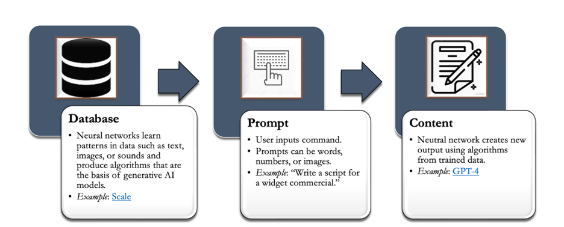

Generative AI
What is Generative AI?
Generative artificial intelligence (GenAI) refers to a class of artificial-intelligence techniques and models that creates new, original content based on data on which the models were trained. The output can be text, images, or videos that reflect or respond to the input. Much as artificial intelligence applications can span many industries, so too can GenAI. Many of these applications are in the area of art and creativity, as GenAI can be used to create art, music, video games, and poetry based on the patterns observed in training data. But its learning of language also makes it well suited to facilitate communication, for example, as chatbots or conversational agents that can simulate human-like conversations, language translation, realistic speech synthesis or text-to-speech. These are just a few examples. This article elaborates on the ways in which GenAI offers both opportunities and risks in civic space and to democracy and what government institutions, international organizations, activists, and civil society organizations can do to capitalize on the opportunities and guard against the risks.
How does GenAI work?
At the core of GenAI are generative models, which are algorithms or information architectures designed to learn the underlying patterns and statistics of training data. These models can then use this learned knowledge to produce new outputs that resemble the original data distribution. The idea is to capture the underlying patterns and statistics of the training data so that the AI model can generate new samples that belong to the same distribution.
Steps of the GenAI Process
As the figure above illustrates, GenAI models are developed through a process by which a curated database is used to train neural networks with machine learning techniques. These networks learn to identify patterns in the data, which allows them to generate new content or make predictions based on the learned information. From there, users can input commands in the form of words, numbers, or images into these algorithmic models, and the model produces content that responds based on the input and the patterns learned from the training data. As they are trained on ever-larger datasets, the GenAI models gain a broader range of possible content they can generate across different media, from audio to images and text.
Until recently, GenAI simply mimicked the style and substance of the input. For example, someone could input a snippet of a poem or news article into a model, and the model would output a complete poem or news article that sounded like the original content. An example of what this looks like in the linguistics field that you may have seen in your own email is predictive language along the lines of a Google Smart Compose that completes a sentence based on a combination of the initial words you use and the probabilistic expectation of what could follow. For example, a machine studying billions of words from datasets would generate a probabilistic expectation of a sentence that starts with “please come ___.” In 95% of cases, the machine might have seen “here” as the next word, in 3% of cases “with me” and in 2% of cases “soon.” Thus, when completing sentences or generating outputs, the algorithm that learned the language would use the sentence structure and combination of words that it had seen previously. Because the models are probabilistic, they might sometimes make errors that do not reflect the nuanced intentions of the input.
GenAI now has far more expansive capabilities. Far beyond text, GenAI is also a tool for producing images from text. For example, tools such as DALL-E, Stable Diffusion, and MidJourney allow a user to input text descriptions that the model then uses to produce a corresponding image. These images vary in their realism–for example, some look like they are out of a science fiction scene while others look like a painting while others are more like a photograph. Additionally, it is worth noting that these tools are constantly improving, ensuring that the boundaries of what can be achieved with text-to-image generation continue to expand.
Recent models have incorporated machine learning from language patterns but also factual information about politics, society, and economics. Recent models are also able to take input commands from images and voice, further expanding their versatility and utility in various applications.
Consumer-facing models that simulate human conversation–“conversational AI”–have proliferated recently and operate more as chatbots, responding to queries and questions, much in the way that a search engine would function. Some examples include asking the model to answer any of the following:
- Provide a photo of a political leader playing a ukulele in the style of Salvador Dali.
- Talk about Kenya’s capital, form of government, or character, or about the history of decolonization in South Asia.
- Write and perform a song about adolescence that mimics a Drake song.
In other words, these newer models may function like a blend between a Google search and an exchange with a knowledgeable individual about their area of expertise. Much like a socially attentive individual, these models can be taught during a conversation. If you were to ask a question about the best restaurants in Manila, and the chatbot responds with a list of restaurants that include some Continental European restaurants, you can then follow up and express a preference for Filipino restaurants, which will prompt the chatbot to tailor its output to your specific preferences. The model learns based on feedback, although models such as ChatGPT will be quick to point out that it is only trained on data up to a certain date, which means some restaurants will have gone out of business and some award-winning restaurants may have cropped up. The example highlights a fundamental tension between up-to-date models or content and the ability to refine models. If we try to have models learn from information as it is produced, those models will generate up-to-date answers but will not be able to filter outputs for bad information, hate speech, or conspiracy theories.
GenAI involves several key concepts:
Generative Models: Generative models are a class of machine learning models designed to create or generate new data outputs that resemble a given set of training data. These models learn underlying patterns and structures from the training data and use that knowledge to generate new, similar data outputs.
ChatGPT: ChatGPT is a Generative Pre-trained Transformer (GPT) model developed by OpenAI. While researchers had developed and used language models for decades, ChatGPT was the first consumer-facing language model. Trained to understand and produce human-like text in a dialogue setting, it was specifically designed for generating conversational responses and engaging in interactive text-based conversations. As such, it is well-suited for creating chatbots, virtual assistants, and other conversational AI applications.
Neural Network: A neural network is a computational model intended to function like the brain’s interconnected neurons. It is an important part of deep learning because it performs a calculation, and the strength of connections (weights) between neurons determines the flow of information and influences the output.
Training Data: Training data are the data used to train generative models. These data are crucial since the model learns patterns and structures from these data to create new content. For example, in the context of text generation, training data would consist of a large collection of text documents, sentences, or paragraphs. The quality and diversity of the training data have a significant impact on the performance of the GenAI model because it helps the model generate more relevant content.
Hallucination: In the context of GenAI, the term “hallucination” refers to a phenomenon where the AI model produces outputs that are not grounded in reality or accurate representations of the input data. In other words, the AI generates content that seems to exist, but in reality, it is entirely fabricated and has no basis in the actual data on which it was trained. For instance, a language model might produce paragraphs of text that seem coherent and factual but, upon closer inspection, might include false information, events that never happened, or connections between concepts that are logically flawed. The problem results from noise in the training data. Addressing and minimizing hallucinations in GenAI is an ongoing research challenge. Researchers and developers strive to improve the models’ understanding of context, coherence, and factual accuracy to reduce the likelihood of generating content that can be considered hallucinatory.
Prompt: GenAI prompt is a specific input or instruction provided to a GenAI model to guide it in producing a desired output. In image generation, a prompt might involve specifying the style, content, or other attributes you want the generated image to have. The quality and relevance of the generated output often depend on the clarity and specificity of the prompt. A well-crafted prompt can lead to more accurate and desirable generated content.
Evaluation Metrics: Evaluating the quality of outputs from GenAI models can be challenging, but several evaluation metrics have been developed to assess various aspects of generated content. Metrics like Inception Score, Frechet Inception Distance (FID), and Perceptual Path Length (PPL) attempt to measure aspects of model performance such as the diversity of responses (so that they do not all sound like copies of each other), relevance (so the responses are on topic) and coherence (so that responses stay on topic) of the output.
Prompt Engineering: Prompt engineering is the process of designing and refining prompts or instructions given to GenAI systems, such as chatbots or language models like GPT-3.5, to elicit specific and desired responses. It involves crafting the input text or query in such a way that the model generates outputs that align with the user’s intent or the desired task. It is useful for optimizing the benefits of GenAI but requires a deep understanding of the model’s behavior and capabilities as well as the specific requirements of the application or task. Well-crafted prompts can enhance the user experience by ensuring that the models provide valuable and accurate responses.
How is GenAI relevant in civic space and for democracy?
The rapid development and diffusion of GenAI technologies–across medicine, environmental sustainability, politics, and journalism, among many other fields–is creating and will create enormous opportunities. GenAI is being used for drug discovery, molecule design, medical-imaging analysis, and personalized treatment recommendations. It is being used to model and simulate ecosystems, predict environmental changes, and devise conservation strategies. It offers more accessible answers about bureaucratic procedures so citizens better understand their government, which is a fundamental change to how citizens access information and how governments operate. It is supporting the generation of written content such as articles, reports, and advertisements.
Across all of these sectors, GenAI also introduces potential risks. Governments, working with the private sector and civil society organizations, are taking different approaches to balancing capitalizing on the opportunities while guarding against the risks, reflecting different philosophies about risk and the role of innovation in their respective economies and different legal precedents and political landscapes across countries. Many of the pioneering efforts are taking place in the countries where AI is being used most, such as in the United States or countries in the European Union, or in tech-heavy countries such as China. Conversations about regulation in other countries have lagged. In Africa, for example, experts at the Africa Tech Week conference in spring 2023 expressed concern about the lag in Africa’s access to AI and the need to catch up to reap the benefits of AI in the economy, medicine, and society, though they also gestured toward privacy issues and the importance of diversity in AI research teams to guard against bias. These conversations suggest that both access and regulation are developing at different rates across different contexts, and those regions developing and testing regulations now may be role models or at least provide lessons learned for other countries as they regulate.
The European Union has moved quickly to regulate AI, using a tiered, risk-based approach that designates some types of “high risk uses” as prohibited. GenAI systems that do not have risk-assessment and -mitigation plans, clear information for users, explainability, activity logging, and other requirements are considered high risk. Most GenAI systems would not meet those standards, according to a 2021 Stanford University study. However, executives from 150 European companies have collectively pushed back against aggressive regulation, suggesting that overly stringent AI regulation will incentivize companies to establish headquarters outside of Europe and stifle innovation and economic development in the region. An open letter acknowledges that some regulation may be warranted but that GenAI will be “decisive” and “powerful” and that “Europe cannot afford to stay on the sidelines.”
China has been one of the most aggressive countries when it comes to AI regulation. The Cybersecurity Administration of China requires that AI be transparent, unbiased, and not used for generating misinformation or social unrest. Existing rules highly regulate deepfakes—synthetic media in which a person’s likeness, including their face and voice, is replaced with someone else’s likeness, typically using AI. Any service provider that uses content produced by GenAI must also obtain consent from deepfake subjects, label outputs, and then counter any misinformation. However, enacting such regulations does not mean that state actors will not use AI for malicious purposes or for influence operations themselves as we discuss below.
The United States has held a number of hearings to better understand the technology and its impact on democracy, but by September 2023 had not put in place any significant legislation to regulate GenAI. The Federal Trade Commission, responsible for promoting consumer protection, issued a 20-page letter to OpenAI, the creator of ChatGPT, requesting responses to its concerns about consumer privacy and security. In addition, the US government has worked with the major GenAI firms to establish voluntary transparency and safety safeguards as the risks and benefits of the technology evolve.
Going beyond regional or country-level regulatory initiatives, the UN Secretary General, António Guterrez, has advocated for transparency, accountability, and oversight of AI. Mr. Guterrez observed: “The international community has a long history of responding to new technologies with the potential to disrupt our societies and economies. We have come together at the United Nations to set new international rules, sign new treaties and establish new global agencies. While many countries have called for different measures and initiatives around the governance of AI, this requires a universal approach.” The statement gestures toward the fact that digital space does not know boundaries and that the software technologies innovated in one country will inevitably cross over to others, suggesting that meaningful norms or constraints on GenAI will likely require a coordinated, international approach. To that end, some researchers have proposed an international artificial intelligence organization that would help certify compliance with international standards on AI safety, which also acknowledges the inherently international nature of AI development and deployment.
Opportunities
Enhancing RepresentationOne of the main challenges in democracy and for civil society is ensuring that constituent voices are heard and represented, which in part involves citizens themselves participating in the democratic process. GenAI may be useful in providing both policymakers and citizens a way to communicate more efficiently and enhance trust in institutions. Another avenue for enhancing representation is for GenAI to provide data that allow researchers and policymakers an opportunity to understand various social, economic, and environmental issues and constituents’ concerns about these issues. For example, GenAI could be used to synthesize large volumes of incoming commentary from open comment lines or emails and then better understand the bottom-up concerns that citizens have about their democracy. To be sure, these data-analysis tools need to ensure data privacy, but can provide data visualization for institutional leaders to understand what people care about.
Many regulations and pieces of legislation are dense and difficult to comprehend for anyone outside the decisionmaking establishment. These accessibility challenges are magnified for individuals with disabilities such as cognitive impairments. GenAI can summarize long pieces of legislation and translate dense governmental publications into an easy read format, with images and simple language. Civil society organizations can also use GenAI to develop social media campaigns and other content to make it more accessible to those with disabilities.
GenAI can enhance civic engagement by generating personalized content tailored to individual interests and preferences through a combination of data analysis and machine learning. This could involve generating informative materials, news summaries, or visualizations that appeal to citizens and encourage them to participate in civic discussions and activities. The marketing industry has long capitalized on the realization that content specific to individual consumers is more likely to elicit consumption or engagement, and the idea holds in civil society. The more the content is personalized and targeted to a specific individual or category of individual, the more likely that individual will be to respond. Again, the use of data for helping classify citizen preferences inherently relies on user data. Not all societies will endorse this use of data. For example, the European Union has shown a wariness about privacy, suggesting that one size will not fit all in terms of this particular use of GenAI for civic engagement.
That being said, this tool could help dislodge voter apathy that can lead to disaffection and disengagement from politics. Instead of boilerplate communication urging young people to vote, for example, GenAI could produce clever content known to resonate with young women or marginalized groups, helping to counter some of the additional barriers to engagement that marginalized groups face. In an educational setting, personalized content could be used to cater to the needs of students in different regions and with different learning abilities, while also providing virtual tutors or language-learning tools.
Another way that GenAI could enable public participation and deliberation is through GenAI-powered chatbots and conversational agents. These tools can facilitate public deliberation by engaging citizens in dialogue, addressing their concerns, and helping them navigate complex civic issues. These agents can provide information, answer questions, and stimulate discussions. Some municipalities have already launched AI-powered virtual assistants and chatbots that automate civic services, streamlining processes such as citizen inquiries, service requests, and administrative tasks. This can lead to increased efficiency and responsiveness in government operations. Lack of municipal resources—for example, staff—can mean that citizens also lack the information they need to be meaningful participants in their society. With relatively limited resources, a chatbot can be trained on local data to provide specific information needed to narrow that gap.
Chatbots can be trained in multiple languages, making civic information and resources more accessible to diverse populations. They can assist people with disabilities by generating alternative formats for information, such as audio descriptions or text-to-speech conversions. GenAI can be trained on local dialects and languages, promoting indigenous cultures and making digital content more accessible to diverse populations.
It is important to note that the deployment of GenAI must be done with sensitivity to local contexts, cultural considerations, and privacy concerns. Adopting a human-centered design approach to collaborations among AI researchers, developers, civil society groups, and local communities can help to ensure that these technologies are adapted appropriately and equitably to address specific needs and challenges.
GenAI can also be used for predictive analytics to forecast potential outcomes of policy decisions. For example, AI-powered generative models can analyze local soil and weather data to optimize crop yield and recommend suitable agricultural practices for specific regions. It can be used to generate realistic simulations to predict potential impacts and develop disaster response strategies for relief operations. It can analyze local environmental conditions and energy demand to optimize the deployment of renewable energy sources like solar and wind power, promoting sustainable power solutions.
By analyzing historical data and generating simulations, policymakers can make more informed and evidence-based choices for the betterment of society. These same tools can assist not only policymakers but also civil society organizations in generating data visualizations or summarizing information about citizen preferences. This can aid in producing more informative and timely content about citizen preferences and the state of key issues, like the number of people who are homeless.
GenAI can be used in ways that lead to favorable environmental impacts. For example, it can be used in fields such as architecture and product design to optimize designs for efficiency. It can be used to optimize processes in the energy industry that can enhance energy efficiency. It also has potential for use in logistics where GenAI can optimize routes and schedules, thereby reducing fuel consumption and emissions.
Risks
To harness the potential of GenAI for democracy and the civic space, a balanced approach that addresses ethical concerns, fosters transparency, promotes inclusive technology development, and engages multiple stakeholders is necessary. Collaboration among researchers, policymakers, civil society, and technology developers can help ensure that GenAI contributes positively to democratic processes and civic engagement. The ability to generate large volumes of credible content can create opportunities for policymakers and citizens to connect with each other–but those same capabilities of advanced GenAI models create possible risks as well.
Online MisinformationAlthough GenAI has improved, the models still hallucinate and produce convincing-sounding outputs, for example, facts or stories that sound plausible but are not correct. While there are many cases in which these hallucinations are benign–such as a scientific query about the age of the universe–there are other cases where the consequences are destabilizing politically or societally.
Given that GenAI is public facing, individuals can use these technologies without understanding the limitations. They could then inadvertently spread misinformation from an inaccurate answer to a question about politics or history, for example, an inaccurate statement about a political leader that ends up inflaming an already acrimonious political environment. The spread of AI-generated misinformation flooding the information ecosystem has the potential to reduce trust in the information ecosystem as a whole, leading people to be skeptical of all facts and to conform to the beliefs of their social circles. The spread of information may mean that members of society believe things that are not true about political candidates, election procedures, or wars.
Examples of GenAI generating disinformation include not just text but also deepfakes. While deepfakes have benign potential applications, such as for entertainment or special effects, they can also be misused to create highly realistic videos that spread false information or fabricated events that make it difficult for viewers to discern between fake and real content, which can lead to the spread of misinformation and erode trust in the media. Relatedly, they can be used for political manipulation, in which videos of politicians or public figures are altered to make them appear to say or do things that could defame, harm their reputation, or influence public opinion.
GenAI makes it more efficient to generate and amplify disinformation, intentionally created for the purposes of misleading a reader, because it can produce, in large quantities, seemingly original and seemingly credible but nonetheless inaccurate information. None of the stories or comments would necessarily repeat, which could then lead to an even more credible-seeming narrative. Foreign disinformation campaigns have often been identified on the basis of spelling or grammatical errors, but the ability to use these new GenAI technologies means the efficient creation of native-sounding content that can fool the usual filters that a platform might use to identify large-scale disinformation campaigns. GenAI may also proliferate social bots that are indistinguishable from humans and can micro-target individuals with disinformation in a tailored way.
Since GenAI technologies are public facing and easy to use, they can be used to manipulate not only the mass public, but also different levels of government elites. Political leaders are expected to engage with their constituents’ concerns, as reflected in communications such as emails that reveal public opinion and sentiment. But what if a malicious actor used ChatGPT or another GenAI model to create large volumes of advocacy content and distributed it to political leaders as if it were from real citizens? This would be a form of astroturfing, a deceptive practice that masks the source of content with an aim of creating a perception of grassroots support. Research suggests that elected officials in the United States have been susceptible to these attacks. Leaders could well allow this volume of content to influence their political agenda, passing laws or establishing bureaucracies in response to the apparent groundswell of support that in fact was manufactured by the ability to generate large volumes of credible-sounding content.
GenAI also raises discrimination and bias concerns. If the training data used to create the generative model contains biased or discriminatory information, the model will produce biased or offensive outputs. This could perpetuate harmful stereotypes and contribute to privacy violations for certain groups. If a GenAI model is trained on a dataset containing biased language patterns, it might produce text that reinforces gender stereotypes. For instance, it might associate certain professions or roles with a particular gender, even if there is no inherent connection. If a GenAI model is trained on a dataset with skewed racial or ethnic representation, it can produce images that unintentionally depict certain groups in a negative or stereotypical manner. These models might also, if trained on biased or discriminatory datasets, produce content that is culturally insensitive or uses derogatory terms. Text-to-image GenAI mangles the features of a “Black woman” at high rates, which is harmful to the groups misrepresented. The cause is overrepresentation of non-Black groups in the training datasets. One solution is more balanced, diverse datasets instead of just Western and English-language data that would contain Western bias and create biases by lacking other perspectives and languages. Another is to train the model so that users cannot “jailbreak” it into spewing racist or inappropriate content.
However, the issue of bias extends beyond training data that is openly racist or sexist. AI models draw conclusions from data points; so an AI model might look at hiring data and see that the demographic group that has been most successful getting hired at a tech company is white men and conclude that white men are the most qualified for working at a tech company, though in reality the reason white men may be more successful is because they do not face the same structural barriers that affect other demographics, such as being unable to afford a tech degree, facing sexism in classes, or racism in the hiring department.
GenAI raises several privacy concerns. One is that the datasets could contain sensitive or personal information. Unless that content is properly anonymized or protected, personal information could be exposed or misused. Because GenAI outputs are intended to be realistic-looking, generated content that resembles real individuals could be used to re-identify individuals whose data was intended to be anonymized, also undermining privacy protections. Further, during the training process, GenAI models may inadvertently learn and memorize parts of the training data, including sensitive or private information. This could lead to data leakage when generating new content. Policymakers and the GenAI platforms themselves have not yet resolved the concern about how to protect privacy in the datasets, outputs, or even the prompts themselves, which can include sensitive data or reflect a user’s intentions in ways that could be harmful if not secure.
One of the fundamental concerns around GenAI is who owns the copyright for work that GenAI creates. Copyright law attributes authorship and ownership to human creators. However, in the case of AI-generated content, determining authorship, the cornerstone of copyright protection, becomes challenging. It is unclear whether the creator should be the programmer, the user, the AI system itself, or a combination of these parties. AI systems learn from existing copyrighted content to generate new work that could resemble existing copyrighted material. This raises questions about whether AI-generated content could be considered derivative work and thus infringe upon the original copyright holder’s rights or whether the use of GenAI would be considered fair use, which allows limited use of copyrighted material without permission from the holder of the copyright. Because the technology is still new, the legal frameworks for judging fair use versus copyright infringement are still evolving and might look different depending on the jurisdiction and its legal culture. As that body of law develops, it should balance innovation with treating creators, users, and AI systems’ developers fairly.
Training GenAI models and storing and transmitting data uses significant computational resources, often with hardware that consumes energy that can contribute to carbon emissions if it is not powered by renewable sources. These impacts can be mitigated in part through the use of renewable energy and by optimizing algorithms to reduce computational demands.
Although access to GenAI tools is becoming more widespread, the emergence of the technology risks expanding the digital divide between those with access to technology and those without. There are several reasons why unequal access–and its consequences–may be particularly germane in the case of GenAI:
- The computing power required is enormous, which can strain the infrastructure of countries that have inadequate power supply, internet access, data storage, or cloud computing.
- Low and middle income countries (LMICs) may lack the high-tech talent pool necessary for AI innovation and implementation. One report suggests that the whole continent of Africa has 700,000 software developers, compared to California, which has 630,000. This problem is exacerbated by the fact that, once qualified, developers from LMICs often leave for countries where they can earn more.
- Mainstream, consumer-facing models like ChatGPT were trained on a handful of languages, including English, Spanish, German, and Chinese, which means that individuals seeking to use GenAI in these languages have access advantages unavailable to Swahili speakers, for example, not to mention local dialects.
- Localizing GenAI requires large amounts of data from the particular context, and low-resourced environments often rely on models developed by larger tech companies in the United States or China.
The ultimate result may be the disempowerment of marginalized groups who have fewer opportunities and means to share their stories and perspectives through AI-generated content. Because these technologies may enhance an individual’s economic prospects, unequal access to GenAI can in turn increase economic inequality as those with access are able to engage in creative expression, content generation, and business innovation more efficiently.
Questions
If you are conducting a project and considering whether to use GenAI for it, ask yourself these questions:
-
Are there cases where individual interactions between people might be more effective, more empathetic, and even more efficient than using AI for communication?
-
What ethical concerns—whether from biases or privacy—might the use of GenAI introduce? Can they be mitigated?
-
Can local sources of data and talent be employed to create localized GenAI?
-
Are there legal, regulatory, or security measures that will guard against the misuses of GenAI and protect the populations that might be vulnerable to these misuses?
-
Can sensitive or proprietary information be protected in the process of developing datasets that serve as training data for GenAI models?
-
In what ways can GenAI technology bridge the digital divide and increase digital access in a tech-dependent society (or as societies become more tech-dependent)? How can we mitigate the tendency of new GenAI technologies to widen the digital divide?
-
Are there forms of digital literacy for members of society, civil society, or a political class that can mitigate against the risks of deepfakes or large-scale generated misinformation text?
-
How can you mitigate against the negative environmental impacts associated with the use of GenAI?
-
Can GenAI be used to tailor approaches to education, access to government and civil society, and opportunities for innovation and economic advancement?
-
Is the data your model trained on accurate data, representative of all identities, including marginalized groups? What inherent biases might the dataset carry?
Case Studies
GenAI largely emerged in a widespread, consumer-facing way in the first half of 2023, which limits the number of real-world case studies. This section on case studies therefore includes cases where forms of GenAI have proved problematic in terms of deception or misinformation; ways that GenAI may conceivably affect all sectors, including democracy, to increase efficiencies and access; and experiences or discussions of specific country approaches to privacy-innovation tradeoffs.
Experiences with Disinformation and DeceptionIn Gabon, a possible deepfake played a significant role in the country’s politics. The president had reportedly experienced a stroke but had not been seen in public. The government ultimately issued a video on New Year’s Eve 2018 intending to assuage concerns about the president’s health, but critics suggested that he had inauthentic blinking patterns and facial expressions in the video and that it was a deepfake. Rumors that the video was inauthentic proliferated, leading many to conclude that the president was not in good health, which led to an attempted coup, due to the belief that the president’s ability to withstand the overthrow attempt would be weakened. The example demonstrates the serious ramifications of a loss of trust in the information environment.
In March 2023, a GenAI image of the Pope in a Balenciaga puffy coat went viral on the internet, fooling readers because of the likeness between the image and the Pope. Balenciaga, several months before, had faced backlash because of an ad campaign that had featured children in harnesses and bondage. The Pope seemingly wearing Balenciaga then implied that he and the Catholic church embraced these practices. The internet consensus ultimately concluded that it was a deepfake after identifying telltale signs such as a blurry coffee cup and resolution problems with the Pope’s eyelid. Nonetheless, the incident illustrated just how easily these images can be generated and fool readers. It also illustrated the way in which reputations could be stained through deepfakes.
In September 2023, the Microsoft Threat Initiative released a report pointing to numerous instances of online influence operations. Ahead of the 2022 election, Microsoft identified Chinese Communist Party (CCP)-affiliated social media accounts that were impersonating American voters, responding to comments in order to influence opinions through exchanges and persuasion. In 2023, Microsoft then observed the use of AI-created visuals that portrayed American images such as the Statue of Liberty in a negative light. These images had hallmarks of AI such as the wrong number of fingers on a hand but were nonetheless provocative and convincing. In early 2023, Meta similarly found the CCP engaged in an influence operation by posting comments critical of American foreign policy, which Meta was able to identify due to the types of spelling and grammatical mistakes combined with the time of day (appropriate hours for China rather than the US).
As GenAI tools improve, they will become even more effective in these online influence campaigns. On the other hand, applications with positive outcomes will also become more effective. GenAI, for example, will increasingly step in to fill gaps in government resources. An estimated four billion people lack access to basic health services, with a significant limitation being the low number of health care providers. While GenAI is not a substitute for direct access to an individual health care provider, it can at least bridge some access gaps in certain settings. One healthcare chatbot, Ada Health, is powered by OpenAI and can correspond with individuals about their symptoms. ChatGPT has demonstrated an ability to pass medical qualification exams and should not be used as a stand-in for a doctor, but, in resource-constrained environments, it could at least provide an initial screening, a savings of costs, time, and resources. Relatedly, analogous tools can be used in mental health settings. The World Economic Forum reported in 2021 that an estimated 100 million individuals in Africa have clinical depression, but there are only 1.4 health care providers per 100,000 people, compared to the global average of 9 providers per 100,000 people. People in need of care, who lack better options, are increasingly relying on mental health chatbots until a more comprehensive approach can be implemented because, while the level of care they can provide is limited, it is better than nothing. These GenAI-based resources are not without challenges–potential privacy problems and suboptimal responses–and societies and individuals will have to determine whether these tools are better than the alternative but may be considered in resource-constrained environments.
Other future scenarios involve using GenAI to increase government efficiency on a range of tasks. One such scenario entails a government bureaucrat trained in economics assigned to work on a policy brief related to the environment. The individual begins the policy brief but then puts the question into a GenAI tool, which helps draft an outline of ideas, reminds the individual about points that had been missed, identifies key relevant international legal guideposts, and then translates the English-language brief into French. Another scenario involves an individual citizen trying to figure out where to vote, pay taxes, clarify government processes, make sense of policies for citizens deciding between candidates, or explain certain policy concepts. These scenarios are already possible and accessible at all levels within society and will only become more prevalent as individuals become more familiar with the technology. However, it is important that users understand the limitations and how to appropriately use the technology to prevent situations in which they are spreading misinformation or failing to find accurate information.
In an electoral context, GenAI can help evaluate aspects of democracy, such as electoral integrity. Manual tabulation of votes, for example, takes time and is onerous. However, new AI tools have played a role in ascertaining the degree of electoral irregularities. Neural networks have been used in Kenya to “read” paper forms submitted at the local level and enumerate the degree of electoral irregularities and then correlate those with electoral outcomes to assess whether these irregularities were the result of fraud or human error. These technologies may actually alleviate some of the workload burden placed on electoral institutions. In the future, advances in GenAI will be able to provide data visualization that further eases the cognitive load of efforts to adjudicate electoral integrity.
Countries such as Brazil have raised concerns about the potential misuses of GenAI. After the release of ChatGPT in November 2022, the Brazilian government received a detailed report, written by academic and legal experts as well as company leaders and members of a national data-protection watchdog, urging that these technologies be regulated. The report raised three main concerns:
- That citizen rights be protected by ensuring that there be “non-discrimination and correction of direct, indirect, illegal, or abusive discriminatory biases” as well as clarity and transparency as to when citizens were interacting with AI.
- That the government categorize risks and inform citizens of the potential risks. Based on this analysis, “high risk” sectors included essential services, biometric verification and job recruitment, and “excessive risk” included the exploitation of vulnerable peoples and social scoring (a system that tracks individual behavior for trustworthiness and blacklists those with too many demerits or equivalents), both practices that should be scrutinized closely.
- That the government issue governance measures and administrative sanctions, first by determining how businesses that fall afoul of regulations would be penalized and second by recommending a penalty of 2% of revenue for mild non-compliance and the equivalent of 9 million USD for more serious harms.
At the time of this writing in 2023, the government was debating next steps, but the report and deliberations are illustrative of the concerns and recommendations that have been issued with respect to GenAI in the Global South.
In India, the government has approached AI in general and GenAI in particular with a less skeptical eye, which sheds light on the differences in how governments may approach these technologies and the basis for those differences. In 2018, the Indian government proposed a National Strategy for AI, which prioritized the development of AI in agriculture, education, healthcare, smart cities, and smart mobility. In 2020, the National Artificial Intelligence Strategy called for all systems to be transparent, accountable, and unbiased. In March 2021, the Indian government announced that it would use “light touch” regulation and that the bigger risk was not from AI but from not seizing on the opportunities presented by AI. India has an advanced technological research and development sector that is poised to benefit from AI. Advancing this sector is, according to the Ministry of Electronics and Information Technology, “significant and strategic,” although it acknowledged that it needed some policies and infrastructure measures that would address bias, discrimination, and ethical concerns.
References
Find below the works cited in this resource.
- Borji, Ali, (2021). Pros and Cons of GAN Evaluation Measures: New Developments.
- Breland, Ali, (2019). The Bizarre and Terrifying Case of the “Deepfake” Video that Helped Bring an African Nation to the Brink, Mother Jones.
- Byman, Dan, et al., (2023). Deepfakes and International Conflict, Brookings Institution.
- Gondwe, Gregory, (2023). CHATGPT and the Global South: how are journalists in sub-Saharan Africa engaging with generative AI?
- Heikkila, Melissa, (2023). How OpenAI is trying to make ChatGPT safer and less biased, MIT Tech Review.
- Hutson, Matthew, (2023). Rules to keep AI in check: Nations carve different paths for tech regulation. Nature.
- Jungherr, Andreas, (2023) “Artificial Intelligence and Democracy: A Conceptual Framework,” Social Media and Society.
- Kreps, Sarah & Jakesch, Maurice, (2023). Can AI communication tools increase legislative responsiveness and trust in democratic institutions? Government Information Quarterly.
- Kreps, Sarah & Kriner, Doug, (2023). The potential impact of emerging technologies on democratic representation: Evidence from a field experiment. New Media and Society.
- Kshetri, Nir, (2023). ChatGPT in Developing Economies. IEEE Xplore.
- Microsoft, Seeing AI in New Languages.
- Phiri M, Munoriyarwa A., (2023). Health Chatbots in Africa: Scoping Review. J Med Internet Res.
- Porsdam Mann, Sebastian, et al., (2023). Generative Ai entails a credit-blame asymmetry. Nature Machine Intelligence.
- Trager, Robert F., et al., (2023). International Governance of Civilian AI: A Jurisdictional Certification Approach.
- Warner, Zach, et al., (2021). Hidden in plain sight? Irregularities on statutory forms and electoral fraud. Electoral Studies.
Additional Resources
- Andrej Karpathy, Introduction to Large Language Models.
- Arguedas, A. R., & Simon, F. M., (2023). Automating Democracy: Generative AI, Journalism, and the Future of Democracy. Balliol Interdisciplinary Institute, University of Oxford.
- Bhaskar, Chakravorti, (2023). The AI Regulation Paradox. Foreign Policy.
- Schneier, Bruce & Sanders, Nathan, (2023). Six Ways that AI Could Change Politics. MIT Tech Review.
- Hogg, Luke, (2023). Artificial Intelligence Could Democratize Government.Tech Policy Press.
- Muggah, Robert & Szabó, Ilona, (2023). Artificial Intelligence Will Entrench Global Inequality. Foreign Policy.
- Kreps, Sarah & Kriner, Doug, (2023). How Generative AI Affects Democratic Engagement. Brookings Institution.
- Nvidia, What is Generative AI?
Related Technologies & Trends
Technologies & Trends


Principles for Digital Development
- Design with the User
- Understand the Existing Ecosystem
- Design for Scale
- Be Data Driven
- Use Open Standards, Open data, Open Source, and Open Innovation
- Address Privacy and Security